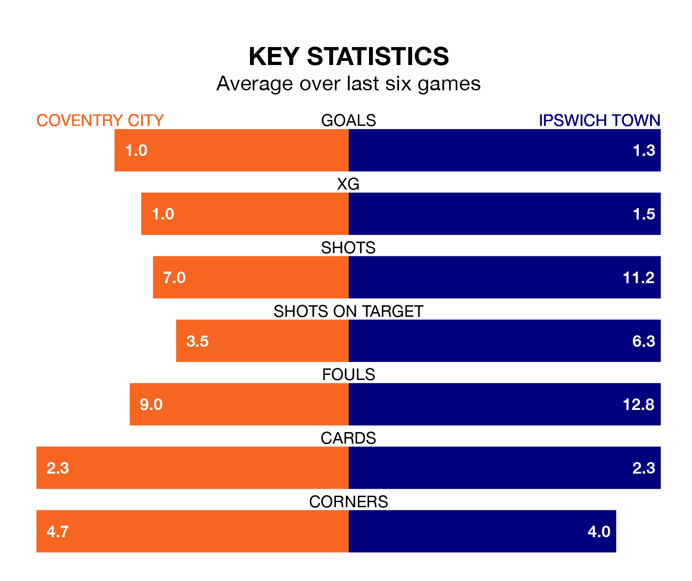

Ipswich Town are strong favourites to take all three points despite Coventry City's home advantage in Tuesday's late match at the Coventry Building Society Arena.
*Betting Company* are offering odds of 1.75 on Ipswich sealing the win, with the visitors sitting third in EFL Championship table.
Coventry, who are ninth in the league and 26 points behind the Blues, are priced at 3.9 to win. A draw is set at 3.85.
With 88 goals in 44 games so far this season, Ipswich are the league's second-highest scorers with 2.0 goals per game. And they are conceding at an average rate, letting in 56 goals at a rate of 1.3 per game.
Coventry are also above average scorers, with 1.5 goals per game, compared to a league average of 1.3. They have conceded 1.2 goals per game.
In Václav Hladký, Town can rely on one of the league's safest pair of hands. He has kept 14 clean sheets in his 44 appearances this season, and only two other 'keepers – Leeds United's Illan Meslier and West Bromwich Albion's Alex Palmer – have been able to prevent the opposition scoring on more occasions in EFL Championship.
In City's net, Bradley Collins has eight clean sheets in 26 games.
The Sky Blues are in bad form in EFL Championship, with one win and a draw from their last six games.
With two wins and three draws over that period, the Blues' form is better – they have taken nine points from 18, compared to the home team's four.
In the last five years, Coventry and Ipswich have played each other on five occasions. Coventry won two of them, Ipswich one, and they drew twice.
On average, the Sky Blues scored 1.2 goals and the Blues 1.0 in those matches.
Their last meeting was on December 2, when Ipswich won 2-1 at home.
Coventry's last match was on Saturday, a 0-0 draw against Blackburn Rovers.
Ipswich drew 3-3 with Hull City last time out, also on Saturday, with Omari Giraud-Hutchinson (two) and George Hirst on the scoresheet.
Updated: 10:44 (UTC), 30/04/24